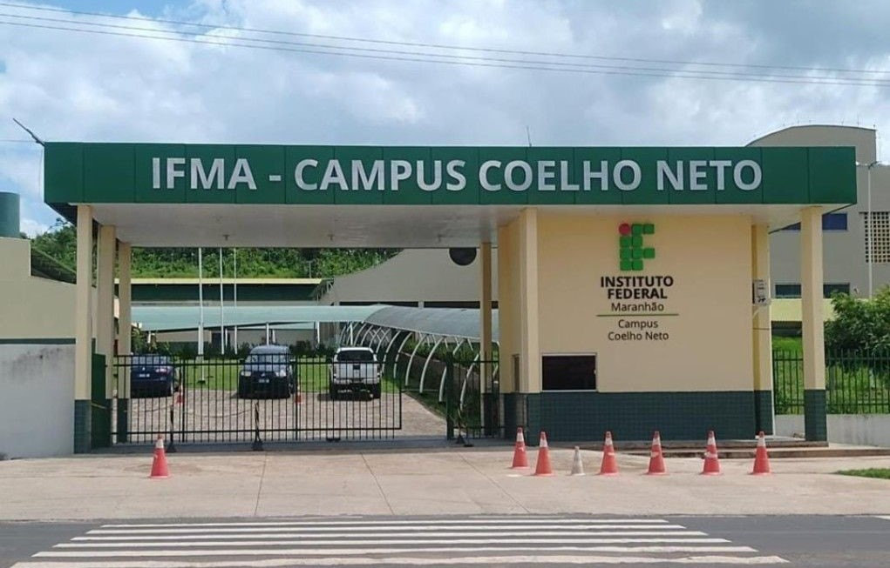

Sobre o Campus
O IFMA Campus Coelho Neto foi autorizado a funcionar em 23 de abril de 2013. Segundo dados do IBGE, o município de Coelho Neto possui 46.750 habitantes, área de 975.549 m² e está localizado na região do Médio Parnaíba maranhense.
Do ponto de vista econômico, a cidade de Coelho Neto concentra arranjos produtivos focados nos setores de agricultura e indústria de beneficiamento de cana-de-açúcar.
O IFMA Campus Coelho Neto está situado na zona urbana de Coelho Neto. Os cursos ofertados pelo Instituto foram desenvolvidos para contribuir com o desenvolvimento social e econômico da região. Atualmente, os cursos atendem alunos de Coelho Neto e de municípios vizinhos como Duque Bacelar-MA, Buriti de Inácia Vaz-MA e Miguel Alves-PI.